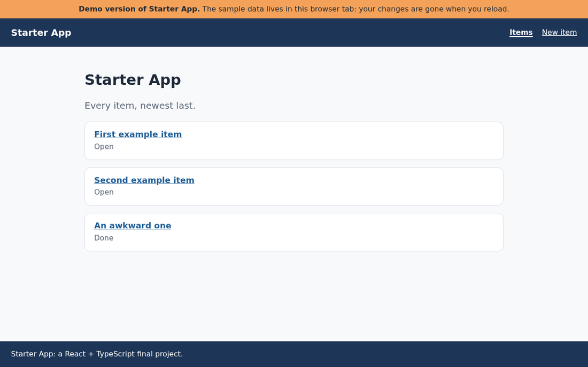

React + TypeScript · Part 3 · Session 25 of 26 · 3 hours
Session 25
Final Project Workshop and Next Steps
Your brief, your types, your plan, and the TypeScript you will read next.
Today
Three hours, two lessons, one plan
| 0:00 | Warm-up: Part 3 in five questions |
| 0:10 | 11.1 Final Project: brief, charter, types first |
| 0:50 | 11.1 Lab: Bramblekey, then your own project |
| 1:30 | Break (10 min) |
| 1:40 | 11.2 Next Steps: reading advanced types |
| 2:05 | 11.2 Lab and the project start |
| 2:30 | Final project plan: dates, reviewers, showcase |
| 2:50 | Exit ticket, homework, what to bring next time |
LABS Lab files are in
labs/module-25. Work in starter/, never the solution.Warm-up · 10 minutes
Part 3 in five questions
- Why is everything the query function uses in the key?
- An empty Notes box: what does the schema's output hold?
- How do Testing Library tests find a button?
- What does
/* /index.html 200fix? - What makes a demo build honest?
WHY Each answer is a rubric row of your final project.
11.1
Final Project
The instructions go away. Everything else stays.
11.1 · Mental model
From crew member to crew lead
- Volunteers follow the plan; the lead brings the clipboard
- The worksheet is the clipboard
- Your domain types are the map at the top of it
- You will change both as you learn: that is their point
RULE Types first · a draft deploy early · cut features before checks
11.1 · The kit
final-project-kit: five files
worksheet.md: thirteen sections, filled from your journalbriefs.md: seven clients, or your own idearubric.md: ten rows, 0 / 1 / 2peer-review.md: 90 minutes on a classmate's appstarter/: the HQ's tooling, with a mock API
11.1 · Choose
Seven briefs, or your own idea
- Cobalt Cycle Repairs · Larkspur Tool Library · Quillmark Studio Board
- Brightleaf Community Pantry · Kestrel Sailing Club
- Saltmarsh Bakery · Marigold Reading Circle
- Own idea: 2 to 4 types, 5 to 9 routes, a server-only rule, a mutation
- No real payments, no stored passwords, no live chat
CHARTER Write one feature you will NOT build, and why.
11.1 · Charter · 15 minutes
Choose, then size it in pairs
- Alone: read the briefs, pick one, one sentence why
- In pairs: worksheet section 0, one charter after the other
- Partner's question: what are you NOT building?
- Own ideas: checked against the size rules
11.1 · Types first
Unions, cents, a day that may be null
/** A day in the shop's calendar: "YYYY-MM-DD" */ export type DateString = string /** Money as a whole number of cents: 1999 is $19.99, and sums never drift */ export type Cents = number export type BikeKind = 'road' | 'mountain' | 'city' | 'cargo' | 'kids' /** A repair ticket moves through these steps, in this order (the API refuses skipped steps) */ export type TicketStatus = 'received' | 'diagnosed' | 'waiting-for-parts' | 'ready' | 'collected'
WHY Every downstream file depends on these lines.
11.1 · Types first
Five decisions, each from a lesson
- Unions, not strings: a typo is a type error (2.2)
nullfor known to be empty;?means not sent- Money in whole cents:
Cents - Computed, never stored: totals, overdue
- Request types from the domain:
Pick,Partial(2.4)
11.1 · Live demo
One new error code: tsc follows it
npx tsc -b
src/api/client.ts:34:7 - error TS2741: Property 'conflict' is missing in type '{ validation_failed: true; not_found: true; server_error: true; }' but required in type 'Record<ErrorCode, true>'.
Found 1 error in src/api/client.ts:34
WHY A Record must list every code. An array would compile, and miss every 409.
11.1 · Live demo
Money in cents
node -p "1.10 + 2.20" node -p "110 + 220"
3.3000000000000003 330
WATCH Store cents, format only for display.
11.1 · The starter
Keep, adapt, replace
- Keep: tsconfigs, lint, Vite, Playwright, tests setup, CI, _redirects, _headers
- Adapt: config, tokens, layout, client guards, queries, schemas, labels
- Replace:
Item, sample data, handlers, the example pages - The mock API answers in tests,
dev:demoand the demo build
WATCH
npm run dev wants a real API: use npm run dev:demo.11.1 · Live demo
Green before you start
npx tsc -b npm run lint npx vitest run
Found 0 warnings and 0 errors.
Test Files 3 passed (3)
Tests 11 passed (11)
WHY Your first commit tests only your own code.
11.1 · Guided lab · 20 minutes
Bramblekey Piano Service, types first
- Copy the starter to
bramblekey-practice,npm ci - Copy
starter/src/visitsinto itssrc/ npx tsc -b: 15 errors, TS2578 = should be an error- Task 1 in pairs: unions, null, no total, Pick, Partial, labels
PAIRS Partner's job: ask why for every property.
11.1 · Milestones
About 25 hours, in evenings
| 1 | Types first | 2–3 h |
| 2 | Walking skeleton | 3–5 h |
| 3 | Features | 6–9 h |
| 4 | Accessibility and performance | 2–3 h |
| 5 | Tests and CI | 3–4 h |
| 6 | Launch | 1–2 h |
| 7 | Peer review | 2–3 h |
RULE 50 % over? Stop and re-plan. Cut features before checks.
11.1 · Done
The rubric: ten rows, 0 / 1 / 2
- Plan (worksheet)
- Types and data
- Routes and screens
- States and messages
- Server data and state
- Forms
- Accessibility and performance
- Tests and CI
- Launch and security
- Review and reflection
RULE Complete = no row at not yet. Self, peer and instructor use the same sheet.
11.1 · Project · 20 minutes
Steps 2 to 4 in the room

PROJECT At home: sample data, the mock API's rule with tests, first green CI.
10
Break
Back at 1:40. Let npm ci finish in your project copy.
11.2
Next Steps
Reading the tide table yourself.
11.2 · Mental model
TypeScript's own types, read aloud
type Partial<T> = { [P in keyof T]?: T[P]; }; type Record<K extends keyof any, T> = { [P in K]: T; }; type ReturnType<T extends (...args: any) => any> = T extends (...args: any) => infer R ? R : any;
WHY For each property name P of T, an optional property with the same type.
11.2 · Live demo
satisfies keeps the keys
console.log(title('volunteers'))
advanced.ts:26:19 - error TS2345: Argument of type '"volunteers"' is not assignable to parameter of type '"events" | "impact" | "sites"'. Found 1 error in advanced.ts:26
WHY With an annotation instead, the check is silent: the keys are gone.
11.2 · Live demo
as trusts you
type EventStatus = 'draft' | 'scheduled' | 'completed' | 'cancelled' // "as" tells TypeScript to trust you: the missing statuses go unnoticed const tones = { draft: 'neutral', scheduled: 'info', } as Record<EventStatus, string> console.log(tones.completed.toUpperCase())
TypeError: Cannot read properties of undefined (reading 'toUpperCase')
WATCH satisfies would name the two missing statuses before anything runs.
11.2 · Mapped types
Setters, computed from two lines
ts-lab/advanced.ts
interface Settings { theme: 'system' | 'light' | 'dark' density: 'roomy' | 'compact' } type Setters<T> = { [K in keyof T & string as `set${Capitalize<K>}`]: (value: T[K]) => void } type SettingsStore = Settings & Setters<Settings>
WHY Hover
store.setDensity: (value: "compact" | "roomy") => void11.2 · Branded types
Two strings TypeScript keeps apart
eventLink(theo)
advanced.ts:106:50 - error TS2345: Argument of type 'VolunteerId' is not assignable to parameter of type 'EventId'. Found 1 error in advanced.ts:106
WHY Nothing at run time: one checking constructor is the only cast.
11.2 · Declaration files
TS7016: found the JavaScript, no types
scratch.ts:1:29 - error TS7016: Could not find a declaration file for module 'marisol-tides'. '/Users/you/shoreline/ts-lab/node_modules/marisol-tides/index.js' implicitly has an 'any' type. Try `npm i --save-dev @types/marisol-tides` if it exists or add a new declaration (.d.ts) file containing `declare module 'marisol-tides';`
WHY
@types/... first; otherwise a small .d.ts with real types. Never an empty declare module.11.2 · Where React goes next
Server and pocket
- Next.js: HTML from the server
- Server components; 'use client' for state
- Public pages search engines read
- React Native: View, Text, Pressable
- Same types, Query, Zod, MSW
- The volunteers' phone app
WHY Almost everything you learned moves with you.
11.2 · Teams
GitHub flow and kind review
- main always releasable; one short branch per change
- Pull request + template + CI before anyone merges
- Review labels: blocking · suggestion · nit
- Shared contract: add before you use, stop using before you remove
RULE Specific, labeled, kind: file, line, what happens.
11.2 · Keeping up
npm outdated: Latest is information

WATCH One major per branch, after the release notes, CI decides.
11.2 · Guided lab · 15 minutes
satisfies, not as
labs/module-25/l11_2-next-steps/starter,npm installnpm test: a crash and a TODO;npm run check: TS7016, TS2578, TS2344- Task 1:
astosatisfies, read TS2741, add marsh - Then
reportTitles: keep the keys
MORE Finished? Task 2: three types from types. Task 3: a .d.ts.
11.2 · Project
advanced.ts, then a reviewed pull request
- Step 1 now: the satisfies section and its two mistakes
- At home: mapped, template literal, conditional, branded
- Step 5 on GitHub:
add-pr-template, green checks, one labeled comment - The template goes into your final project too
Final project plan · 20 minutes
Dates, a reviewer, a slot
- Estimates and dates for Milestones 2 to 7, in your calendar
- Your reviewer, from another brief, and the swap date
- The evidence date: two days before Session 26 (
evidence_check.mjs) - Your showcase slot: five minutes, two for questions
RULE Complete = rubric with no not yet AND the written final passed (70 %).
Wrap-up · 4 minutes
Exit ticket
- Two type decisions Lesson 11.1 makes for every brief
- When
satisfies, and not an annotation oras? - Your Milestone 1 and 2 dates, and your reviewer
WHY No notes. Workbook Exit Ticket box.
Before Session 26
Homework and bring list
- Milestone 1 this week: first green CI run
- 11.2's project: advanced.ts and your first reviewed pull request
- Both quizzes, Exercise 1 of each, labs' Tasks 2 and 3
- Bring: the live link, the evidence check's READY, a pen
NEXT Session 26: Final Project Showcase and Final Assessment.